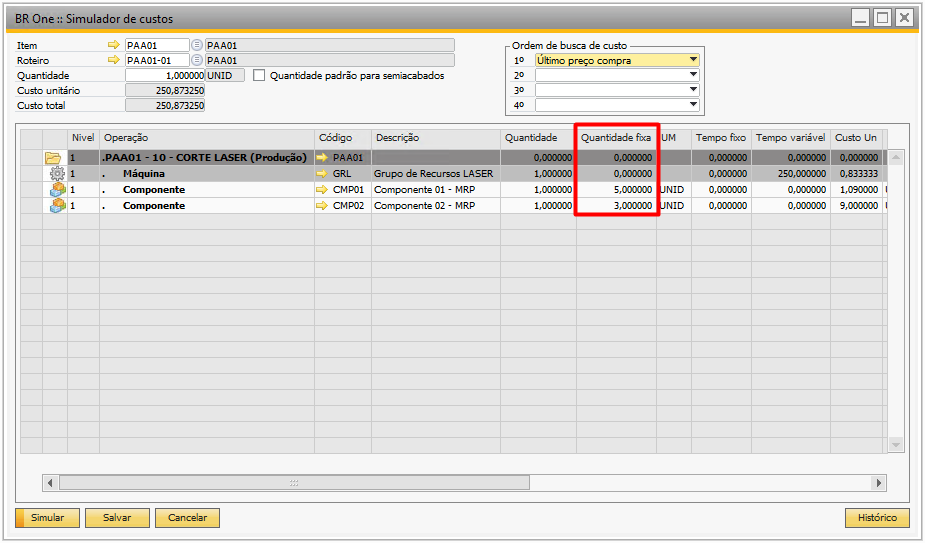
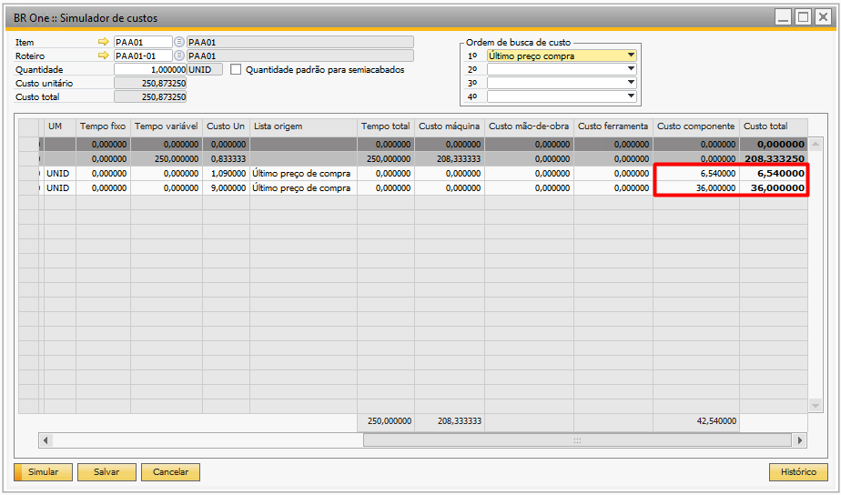
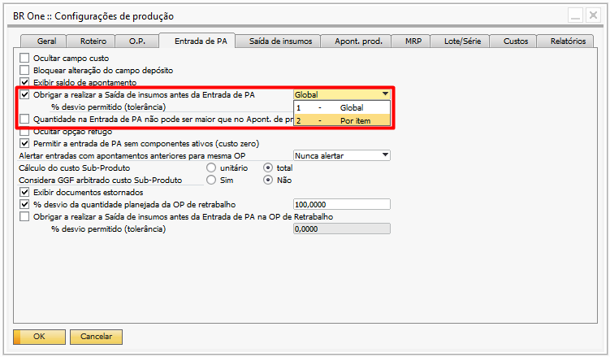
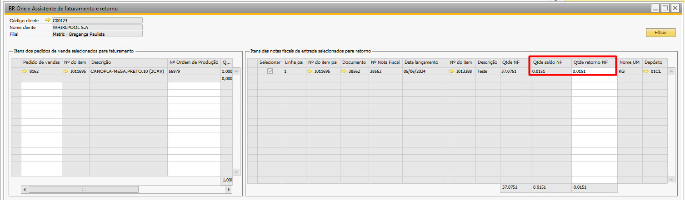

Versão 4.11.330
Nota
Melhoria
Considerar quantidade fixa no simulador de custo
Na atualização mais recente do BR One 330, foi implementada uma melhoria na tela do simulador de custos. Foi adicionada a coluna “Quantidade Fixa”, que agora considera as quantidades dos componentes informadas no campo “Qtde. Fixa” do roteiro. As colunas “Custo Componentes” e “Custo Total” também foram ajustadas, passando a calcular o custo com a fórmula: Custo Um *((Quantidade PA * Quantidade) + Quantidade Fixa).
Para ilustrar o cálculo, vamos considerar dois componentes, MP.0001 e MP.0002, aplicando a fórmula mencionada para determinar o custo dos componentes e o custo total:
MP.0001: R$ 20,00 *((1*1) + 5) = R$ 120,00
MP.0002: R$ 1,64 *((1*1) + 3) = R$ 5,84
Implementação de desvio de componentes individual na saída de insumos
Na atualização mais recente do BR One 330, foi implementada uma melhoria para desvio de componentes individual. O parâmetro “Obrigar a realizar a saída de insumos antes da entrada de PA”, disponível em Configurações de Produção na aba Entrada de PA, agora conta com uma nova opção denominada Por item. Ao selecionar essa opção, o campo % desvio permitido (tolerância) ficará bloqueado para edição. No entanto, tanto no roteiro quanto na Ordem de Produção, uma nova coluna % desvio estará desbloqueada, permitindo que uma porcentagem seja informada, exigindo a saída de insumos antes da entrada de PA para cada item individualmente.
Controle de saldo para retorno no beneficiamento de vendas
Na atualização mais recente do BR One 330, foi implementada uma melhoria para o processo de beneficiamento de vendas. Foi adicionado o parâmetro “Não permitir retornar quantidade com base no saldo da NF”. Quando esse parâmetro estiver marcado e o valor no campo “Qtde saldo NF” for menor que o campo calculado “Qtde retorno NF”, não deverá substituir a quantidade de retorno com base no saldo da nota, deverá informar que não encontrou saldo suficiente em relação à quantidade calculada para retornar, deve ser impedido que o processo avance para a próxima etapa. Nesse caso, será exibida uma mensagem de erro indicando que o saldo da NF é menor que a quantidade necessária para retorno.
“BR One :: Não será possível avançar para a etapa 3, pois a quantidade do item ‘xxxx’ é menor do que o necessário.”
Exemplo:
Suponhamos que estamos realizando o retorno do item “MESA”. Sabemos que, para a produção de 01 unidade desse item, é necessário 0,01619 do componente “MP”. No entanto, ao filtrar as NF na etapa 2, encontramos um saldo no campo “Qtde. saldo NF” de apenas 0,0151. Nesse cenário, deve bloquear o avanço para a próxima etapa até que a quantidade tenha saldo em nota para realizar o retorno.
Nota
Correções
Exibição na aba resultado ao executar o MRP
Realizado ajuste no assistente MRP para que, ao executar o MRP com as configurações na etapa 2 “Semanas e Meses” e a descrição do item contendo mais de 100 caracteres, esse item seja exibida corretamente na aba de “Resultado”.
Aba resultado do fechamento de custo não é exibida após simulação
Realizado ajuste na tela de fechamento de custo contábil para que, após a simulação, a aba “Resultado” seja exibida normalmente.
Ajuste na exibição ao clicar no cfl do pedido de venda
Realizado ajuste no CFL da coluna Pedido de Venda no assistente de faturamento e retorno. Agora, ao calcular os insumos por previsto, serão exibidos os pedidos de venda mesmo que não haja uma Ordem de Produção vinculada.